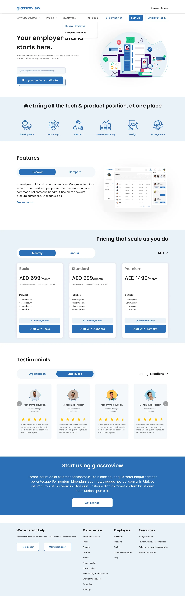

Glassreview
A platform where employers discover, compare and review employees, so hiring decisions rest on what past employers have said.

The guest employer
An employer who hasn't signed up yet can search for people, compare them side by side and open a profile, before deciding to create an account.
Guest employers search for people and narrow the list by skills, language and job type, with ratings visible in every result.
Internal review and rating
Once signed in, an employer reviews and rates their own people, answers review requests and messages other employers.
Once signed in, employers land on an overview of their people, their reviews and the requests waiting for them.
The landing page
Hero and search, job categories, features, pricing, testimonials and footer. Scroll inside the frame to see all of it.